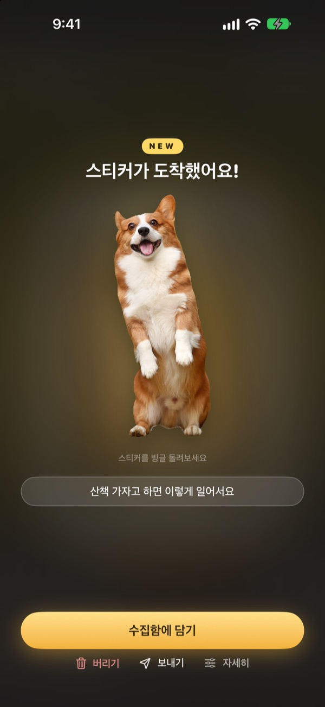
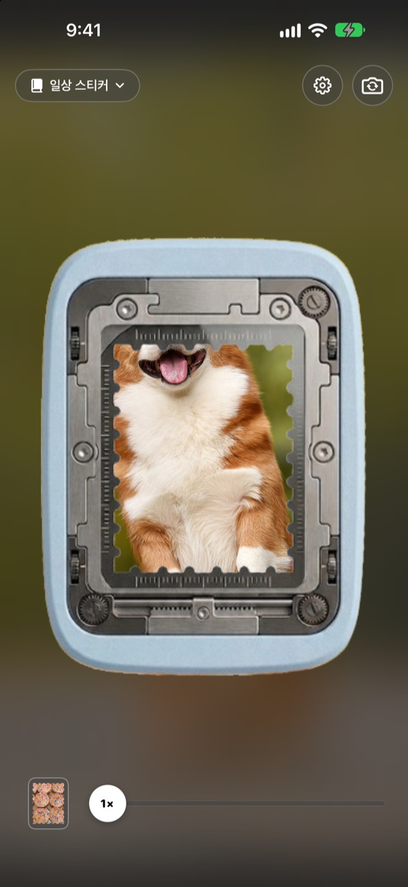
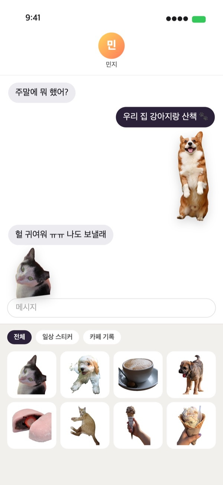
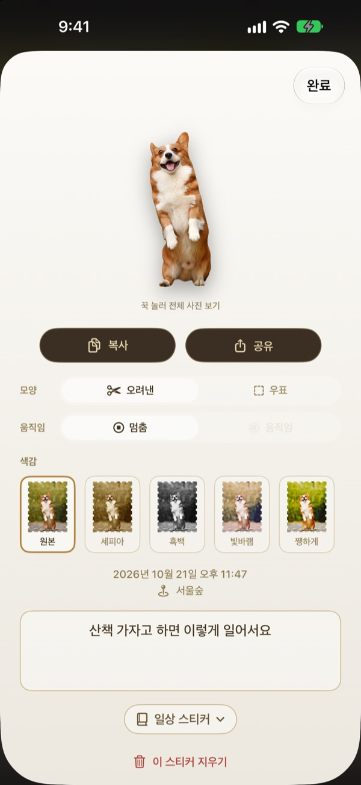
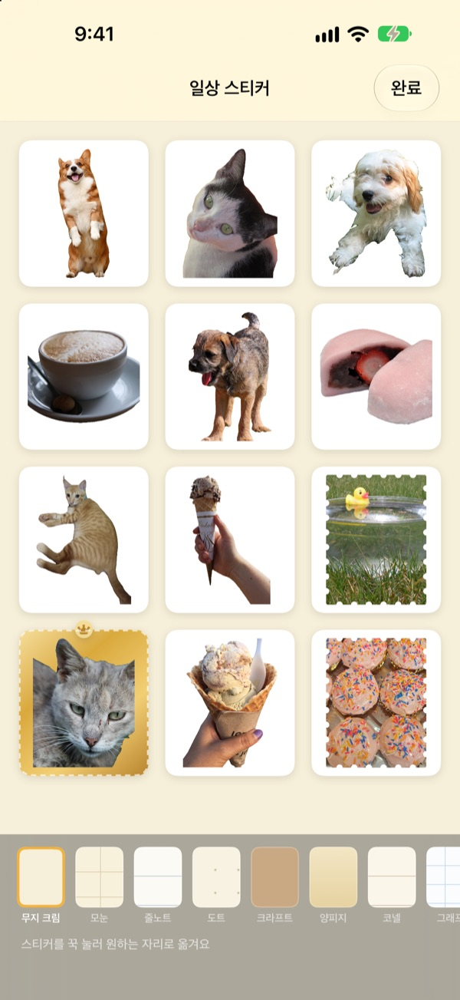

꾹 누르면,
그 순간이 스티커로
펀칭기 창에 장면을 맞추고 꾹 눌렀다 떼세요. 강아지는 강아지 모양대로 오려지고, 누르기 전후의 짧은 움직임까지 담겨요. 뜯은 스티커는 메시지와 키보드에서 바로 보낼 수 있어요.
모든 기능이 무료예요. 스티커와 사진은 기기 안에만 저장돼요.

직접 뜯어 보세요
장면을 고르고 펀칭 버튼을 꾹 눌렀다 떼세요. 뜯은 뒤에 모양과 색감도 바꿔 보세요.
귀여운 순간은 사진첩에서 잠들어요
강아지가 혀를 내민 순간을 찍어도, 친구에게 스티커로 보내려면 사진을 찾고, 오려 내고, 스티커 앱을 또 열어야 해요. 그사이 대화는 벌써 다른 이야기로 넘어가 있죠. 펀칭은 찍는 그 자리에서 스티커를 뜯고, 담는 순간 메시지 스티커 서랍에 넣어 둬요.
대상은 오려 내고, 풍경은 우표로
사람, 반려동물, 물건처럼 오려낼 대상이 있으면 그 모습만 오려 내요. 풍경처럼 대상이 없으면 톱니 테두리 우표 모양으로 뜯어요.
누르기 전후의 짧은 움직임이 함께 담겨서 스티커가 움직여요.

메시지와 키보드에서 바로
뜯은 스티커는 메시지 앱의 스티커 서랍에 나타나요. 펀칭 키보드를 켜면 다른 앱에서도 골라 붙일 수 있어요.
움직이는 스티커는 움직이는 그대로 보내지고, 꾹 눌러 복사하면 어디에나 붙여 넣을 수 있어요.

모양과 색감은 뜯은 뒤에도
오려낸 모양과 우표 모양, 움직임과 멈춤을 언제든 바꿔요. 원본 사진이 그대로 남아 있어서 몇 번을 바꿔도 처음처럼 또렷해요.
원본, 세피아, 흑백, 빛바램, 쨍하게, 푸름 중에서 색감을 고르고, 한 마디와 날짜, 장소도 남겨요.

수집함으로 모으고, 종이 스티커로 인쇄
주제별로 수집함을 만들면 메시지와 키보드에서도 수집함별로 골라 써요. 크라프트, 모눈, 줄노트, 양피지 같은 속지를 고르고 순서도 마음대로 꾸며요.
수집함을 우표 모양 칼선이 들어간 인쇄용 PDF로 만들어 스티커 용지에 바로 인쇄할 수 있어요.

시작은 세 단계면 돼요
- 1
펀칭기에 맞춰요
카메라 가운데 창에 담고 싶은 것을 넣어요.
- 2
꾹 눌렀다 떼요
떼는 순간 스티커가 뜯겨 나와요.
- 3
담고 보내요
수집함에 담으면 메시지와 키보드에 바로 나타나요.
어디서 쓰고, 어디서 바꾸나요
- 메시지 앱
- 입력창 옆 ＋ ▸ 스티커 ▸ 펀칭 스티커
- 다른 앱
- 펀칭 키보드를 켜고 지구본 단추로 바꿔 골라 붙이기
- 어디에나
- 스티커를 꾹 눌러 복사한 뒤 붙여 넣기
- 종이 스티커
- 수집함 ⋯ ▸ 쓰기 ▸ 인쇄용 스티커 시트 (PDF)
- 속지와 순서
- 수집함 ⋯ ▸ 자유롭게 꾸미기
- 예전 사진
- 수집함의 사진에서 가져오기
- 처음 뜯는 모양
- 설정 ▸ 뜯기 ▸ 기본 모양
- 움직임 보기
- 설정 ▸ 보기 ▸ 움직임 자동 재생
- 바로 열기
- 단축어나 제어 센터의 펀칭 카메라 열기
설정은 카메라 화면 오른쪽 위 톱니 단추에 있어요.
자주 묻는 질문
스티커가 움직이지 않아요.
카메라 오른쪽 위 설정 ▸ 보기에서 움직임 자동 재생이 켜져 있는지 확인해 주세요. 스티커를 눌러 모양 아래 움직임이 켜져 있는지도 봐 주세요. 움직임은 언제나 함께 담기니 언제든 켤 수 있어요. 사진 앱에서 가져온 사진은 한 장이라 움직이지 않아요.
오려낸 스티커가 아니라 우표 모양으로 나와요.
풍경처럼 오려낼 대상이 없는 장면은 자동으로 우표 모양으로 뜯어요. 스티커를 눌러 모양에서 언제든 바꿀 수 있고, 처음부터 우표 모양으로 뜯고 싶다면 설정 ▸ 뜯기 ▸ 기본 모양을 바꿔 주세요.
메시지 앱에서 스티커가 안 보여요.
메시지 앱 입력창 옆 ＋ 단추 ▸ 스티커에서 펀칭 스티커를 찾아 주세요. 펀칭에서 스티커를 한 장 이상 뜯은 뒤에 나타나고, 수집함이 둘 이상이면 수집함별로 골라 볼 수 있어요. 설정 ▸ 쓰기 ▸ 메시지·키보드에서 쓰기에 자세한 방법이 있어요.
키보드는 어떻게 켜나요?
설정 ▸ 쓰기 ▸ 메시지·키보드에서 쓰기의 설정 열기를 누르고, 키보드 ▸ 펀칭 스티커를 켜요. 스티커를 붙여 넣으려면 전체 접근 허용이 필요하지만, 키보드는 입력한 글자를 읽거나 보내지 않고 인터넷에 연결하지 않아요. 그다음 아무 앱에서나 키보드의 지구본 단추를 눌러 펀칭 스티커로 바꾸면 돼요.
진짜 스티커로 인쇄하고 싶어요.
수집함 오른쪽 위 ⋯ ▸ 쓰기 ▸ 인쇄용 스티커 시트 (PDF)를 누르세요. 수집함 단위로 우표 모양 칼선이 들어간 300dpi 인쇄용 PDF가 만들어지고, 집 프린터의 스티커 용지나 인쇄소에 바로 쓸 수 있어요. 자세한 순서는 같은 메뉴의 인쇄 가이드에 있어요.
예전에 만든 컬렉션은 어디 갔나요?
1.0.1부터 스티커를 묶는 방법이 수집함 하나로 바뀌었어요. 컬렉션은 같은 이름의 수집함이 되었고, 거기 있던 스티커와 속지, 순서도 그대로 옮겨졌어요. 이름이 겹치면 뒤에 (컬렉션)이 붙어요.
상태바에 초록불이 떠요.
iOS의 카메라 사용 표시등이에요. 카메라 화면이 떠 있는 동안만 켜지고, 수집함을 여는 동안에는 카메라를 멈춰서 불이 꺼져요.
스티커를 지우면 어떻게 되나요?
스티커와 원본 사진, 움직임 데이터가 기기에서 영구히 지워지고 메시지 스티커 서랍에서도 사라져요. 되살릴 수 없으니 신중하게 지워 주세요.
사진과 스티커는 어디에 저장되나요?
모두 기기 안에만 저장돼요. 계정도, 자체 서버도, 광고도 없어요. 밖으로 나가는 것은 익명 사용 통계와 오류 보고, 그리고 직접 보낸 피드백뿐이에요. 자세한 내용은 개인정보처리방침에 있어요.
정말 무료인가요?
네, 모든 기능을 무료로 쓸 수 있어요. 마음에 들면 앱 안에서 개발자에게 팁을 보낼 수 있지만, 팁으로 열리는 기능은 없어요.
궁금한 점이나 의견은 leeo@kakao.com로 보내 주세요. 보통 2~3일 안에 답해 드려요. 버그와 기능 제안은 GitHub(M1zz/StampCamera)의 이슈로도 받아요.